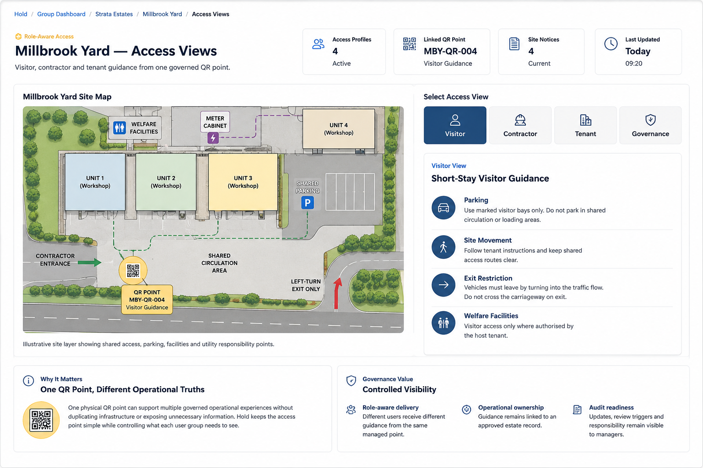

Millbrook Yard Site Map

Visitor, contractor and tenant guidance from one governed QR point.
4 Active
MBY-QR-004
4 Current
Today 09:20

Access View
Visitor, contractor and tenant guidance delivered from one governed operational access point.
Visitor View
Contractor View
Tenant View
Manager / Governance View
Why It Matters
One physical QR point can support multiple governed operational experiences without duplicating infrastructure or exposing unnecessary information. Hold keeps the access point simple while controlling what each user group needs to see.
Governance Value